Creación de Mapas con Tableau
¿Has querido presentar información en un mapa, pero no sabes por dónde empezar?
Existen diversas herramientas para realizarlo, en esta ocasión te presento el software Tableau, que no requiere conocimientos de programación para generar mapas intuitivos y atractivos para cualquier tipo de público. Con este tutorial aprenderás a elaborar un mapa de México a nivel entidad a través de la identificación y uso del Marco Geoestadístico del Instituto Nacional de Estadística y Geografía (INEGI). En este podrás mostrar la información que requieras con su respectiva simbología y etiquetado de forma que puedas transmitir un mensaje claro a tu audiencia.
Antes de comenzar, necesitas tres cosas: Tableau Public, el Marco Geoestadístico del INEGI y los datos desagregados por entidad que desees mostrar. Para instalar Tableau Public da click en este enlace e introduce tu correo electrónico para comenzar con la descarga. El Marco Geoestadístico del INEGI es necesario para garantizar que tu información esté georreferenciada adecuadamente, lo encuentras en distintas categorías territoriales, pero en esta ocasión será a nivel entidad. Para obtenerlo dirígete al sitio oficial del INEGI como se indica a continuación.
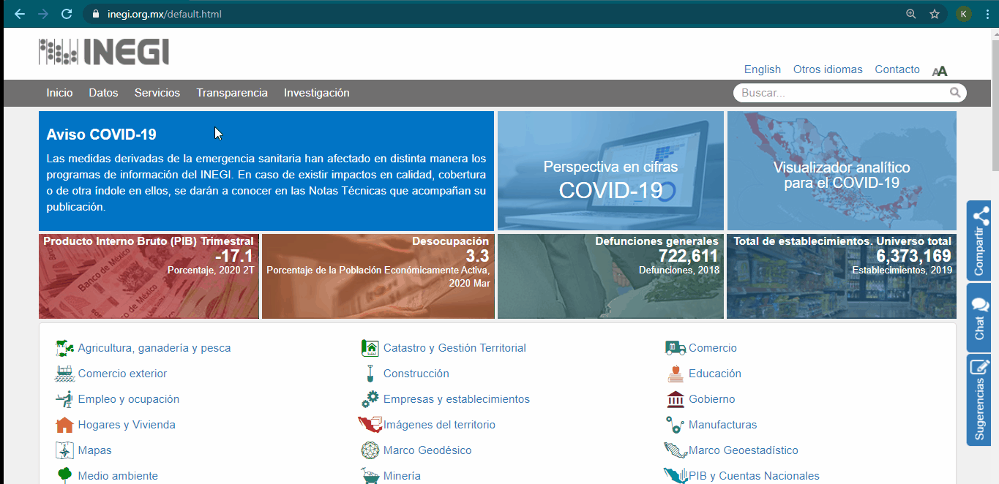
Una vez que haya finalizado la descarga, descomprime la carpeta “mg_sep2019_integrado” y guárdala en tu directorio de trabajo. Por último, necesitas los datos que quieras representar para cada una de las entidades del país. Estos deben estar en un archivo Excel de forma que cada fila corresponda a una observación y cada columna sea una variable. En este sentido, una columna contendrá la clave numérica perteneciente a cada entidad, otra su nombre de acuerdo con el Marco Geoestadístico; esto lo encuentras en la carpeta “catálogos” del archivo que descargaste de INEGI. En una tercera columna agrega el nombre abreviado de la entidad pues será útil si quieres etiquetar los valores en tu mapa. Y, por último, en otra columna debe estar la información que requieras para cada entidad. Para realizar este ejemplo, usaré los datos sobre la percepción de inseguridad de las mujeres en las calles contenidos en la Encuesta Nacional de Victimización y Percepción sobre Seguridad Pública (ENVIPE) 2019 del INEGI. La estructura de tu base de datos debe ser como se ilustra en la siguiente imagen.
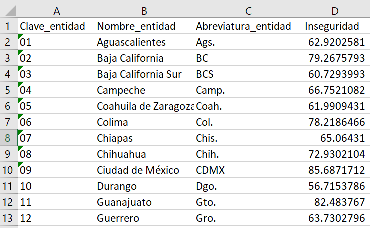
Ahora sí abré Tableau y carga los datos con los que vas a trabajar. En la pantalla de inicio de Tableau del lado izquierdo encontrarás un panel con distintos formatos de archivos, da click en Microsoft Excel y selecciona el archivo que contiene tu base de datos. Si este contiene una solo hoja se abrirá automáticamente, de lo contrario arrastra la hoja con tu información a la parte superior de la página. A continuación, une estos datos con el Marco Geoestadístico del INEGI como se muestra, da click en Añadir, selecciona Archivo espacial y elige el archivo “00ent.shp” contenido en la carpeta “conjunto de datos”. Para realizar la unión, ambos archivos deben contener una columna con los mismos datos para que estos sean identificados, puedes utilizar las claves numéricas de la entidad o sus nombres.
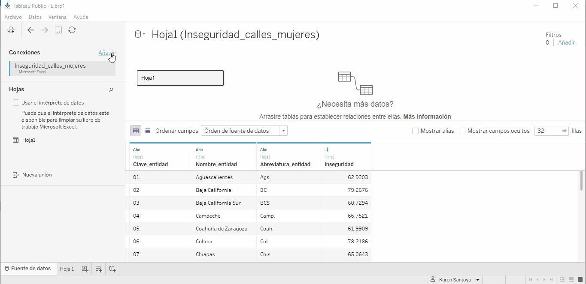
Con los datos en la plataforma irás a la hoja de trabajo de Tableau que aparece en la esquina inferior izquierda, Hoja 1. Una vez que estés ahí, es necesario que identifiques del lado izquierdo los datos con los que vas a trabajar y enseguida encontrarás una serie de recuadros con los títulos Páginas, Filtros y Marcas; este último es el más relevante pues aquí puedes editar la simbología y etiquetado del mapa. En la barra de herramientas superior se encuentran otras opciones que permiten modificar o configurar algunas funciones. Por ahora ubica en Archivo la opción Configuración regional del libro de trabajo y selecciona español (México) para que las unidades que utilices se muestren con la notación adecuada.
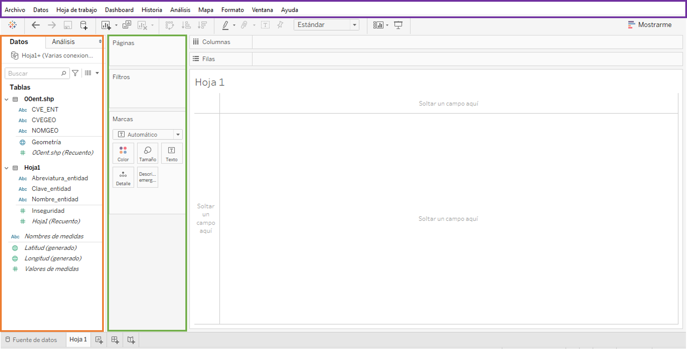
Es momento de comenzar con tu mapa. Arrastra el campo “Geometría” a Detalle ubicado en el recuadro Marcas. Tu pantalla ahora debe mostrarte el mapa de México.
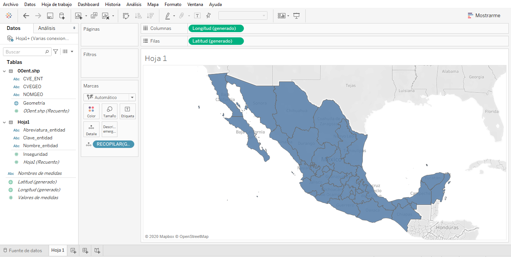
Para que el mapa se vea de forma más clara, ubica en la barra superior la etiqueta Mapa, da click en Capas de mapas y deselecciona todas las opciones.
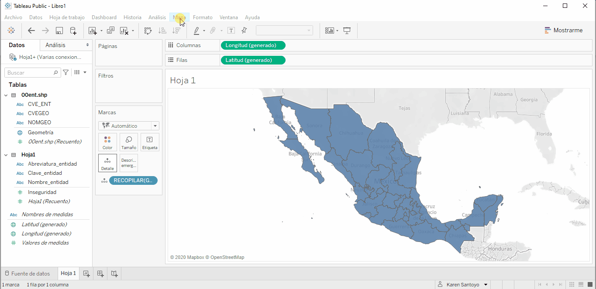
Es tiempo de agregar tus datos al mapa, para este ejemplo usaré el porcentaje de mujeres que perciben inseguridad en las calles. Para realizarlo debes identificar cada entidad con su clave numérica y nombre llevando los campos “CVE_ENT” y “NOMGEO” a Detalle y posteriormente el campo que contiene tus datos a Color.
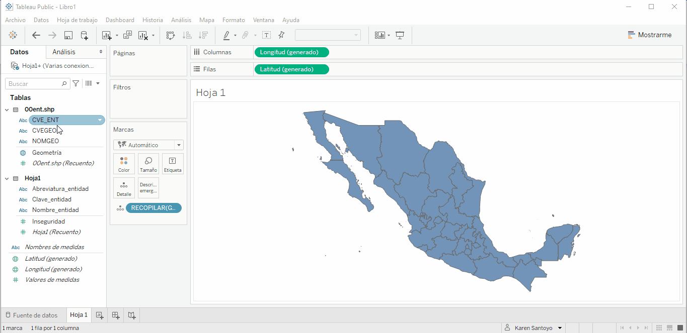
Por default Tableau asigna una paleta de colores, esta puede modificarse al hacer click en Color del recuadro Marcas; puedes dejarla de forma desvanecida o establecer un color escalonado. Cuando elijas los colores, considera que estos son de ayuda para que tu auditorio comprenda de forma más rápida y clara tu mensaje. En esta ocasión las entidades de color más oscuro son aquellas en donde la percepción de inseguridad es más alta, mientras que en las entidades en tono más claro ocurrirá la situación contraria. También puedes editar el nivel de opacidad de los colores, así como los límites y las sombras que quieras darle a tu mapa.
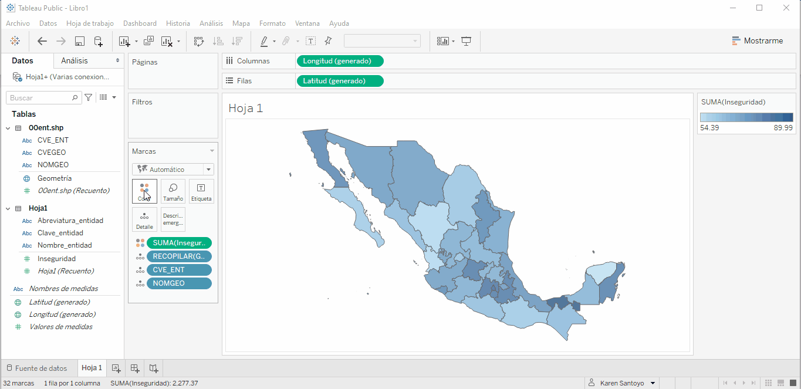
Las etiquetas serán necesarias para conocer el valor exacto de cada entidad. Para esto debes colocar los campos donde guardaste las abreviaturas de las entidades y tus datos en Etiqueta del ya conocido recuadro Marcas. Al dar click en Etiqueta accedes a las opciones de edición.
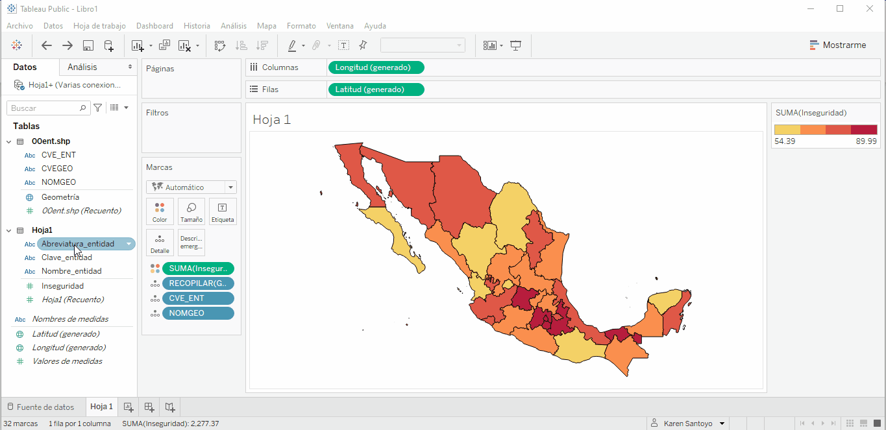
Como te habrás dado cuenta, no aparecen todas las etiquetas pues el espacio que hay en el mapa es limitado, para solucionarlo hay dos opciones. La primera es entrar a las opciones de edición de Etiqueta y seleccionar la opción Permitir que las etiquetas se superpongan a otras marcas, para posteriormente acomodarlas. O, segunda, dar click derecho en la entidad sin etiqueta, seleccionar la opción Una marca y se abrirá un panel donde puedes editar el contenido de tu etiqueta. También es posible modificar la anotación que acabas de crear dando click derecho en esta y seleccionando Formatear.
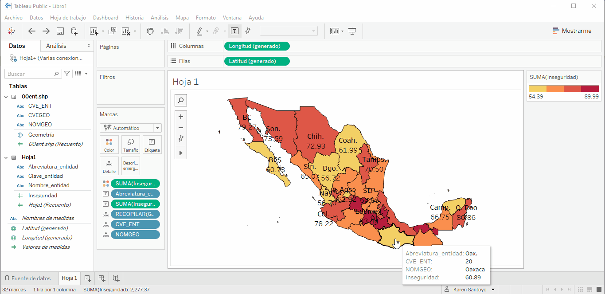
Además de editar el tipo y tamaño de fuente, y la alineación para las etiquetas, puedes indicar qué unidad estás representando en tu mapa dando click derecho en el campo de tus datos y seleccionando Formatear.
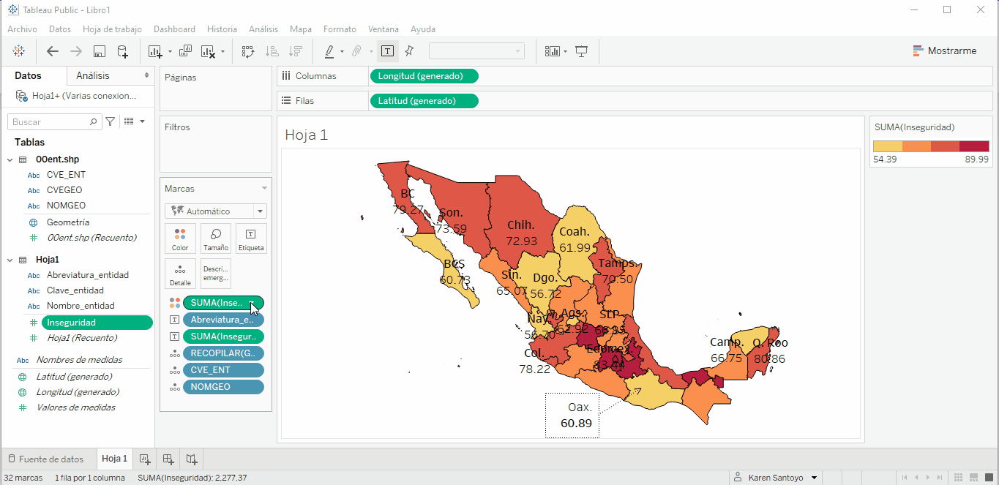
¡Estás por terminar! Dirígete a Dashboard en la barra de herramientas superior y selecciona Nuevo Dashboard para darle la presentación final a tu mapa. Del lado izquierdo puedes indicar el tamaño que tendrá tu hoja. A continuación, arrastra tu hoja de trabajo al dashboard y comienza a editar el título, subtítulo, fuente y la ubicación de la simbología. Recuerda que al dar click derecho en estos objetos puedes acceder a las opciones de edición.
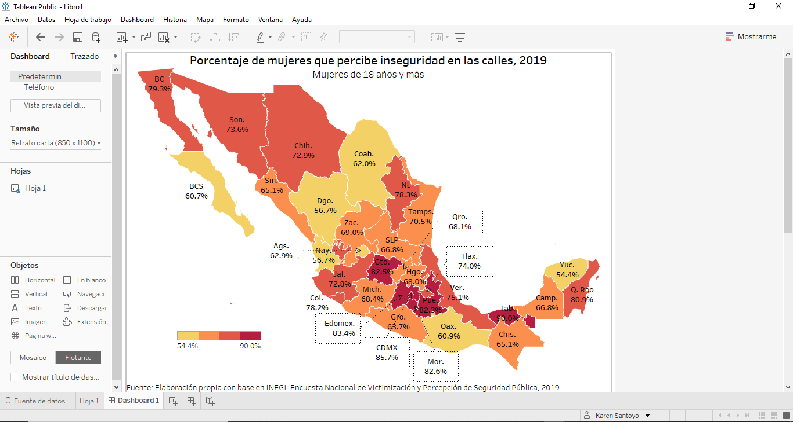
Ahora solo queda guardarlo, para esto dirígete a Archivo en la barra superior y selecciona Guardar en Tableau Public. ¡Listo! Podrás descargar el resultado final en distintos formatos.
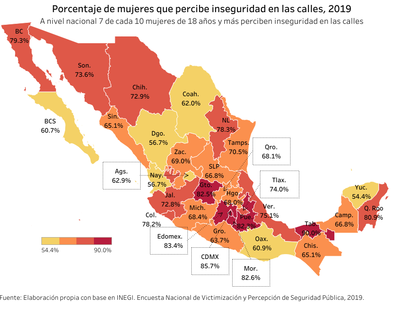
Subscríbete a 🌮 tacos de datos | Aprende visualización de datos en español.
Recibe las mejores publicaciones directamente a tu caja de entrada